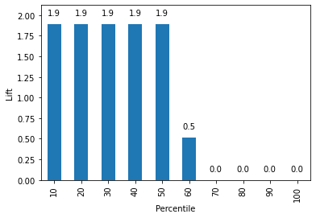
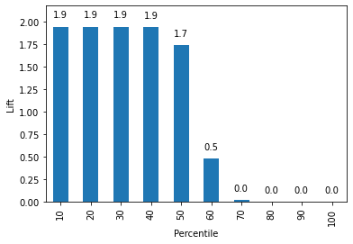
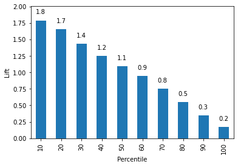
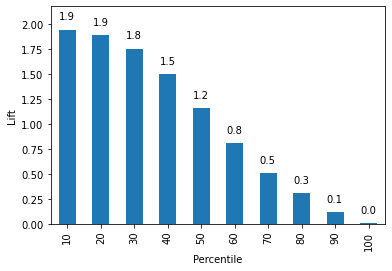
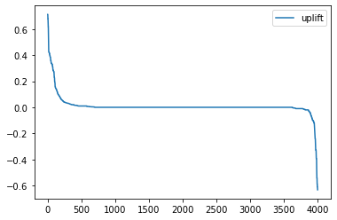
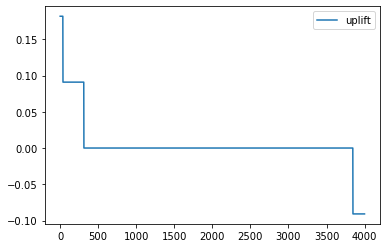

# Import required packages for this chapter
from pathlib import Path
import pandas as pd
from sklearn import preprocessing
from sklearn.linear_model import LogisticRegression
from sklearn.tree import DecisionTreeClassifier
from sklearn.naive_bayes import MultinomialNB
from sklearn.metrics import accuracy_score
from sklearn.ensemble import AdaBoostClassifier
from sklearn.ensemble import BaggingClassifier
from sklearn.ensemble import RandomForestClassifier
from sklearn.neighbors import KNeighborsClassifier
from sklearn.model_selection import train_test_split, GridSearchCV
import matplotlib.pylab as plt
from dmba import classificationSummary
from dmba import liftChart
%matplotlib inlineChapter 13: Combining Methods: Ensembles and Uplift Modeling
- 2019-2020 Galit Shmueli, Peter C. Bruce, Peter Gedeck
Data Mining for Business Analytics: Concepts, Techniques, and Applications in Python (First Edition) Galit Shmueli, Peter C. Bruce, Peter Gedeck, and Nitin R. Patel. 2019.
Date: 2020-03-08
Python Version: 3.8.2 Jupyter Notebook Version: 5.6.1
Packages: - dmba: 0.0.12 - matplotlib: 3.2.0 - pandas: 1.0.1 - scikit-learn: 0.22.2
The assistance from Mr. Kuber Deokar and Ms. Anuja Kulkarni in preparing these solutions is gratefully acknowledged.
# Working directory:
#
# We assume that data are kept in the same directory as the notebook. If you keep your
# data in a different folder, replace the argument of the `Path`
DATA = Path('.').resolve().parent / 'data'
FIGURES = Path('.').resolve().parent / 'figures' / 'chapter_13'
FIGURES.mkdir(exist_ok=True, parents=True)
# and then load data using
#
# pd.read_csv(DATA / ‘filename.csv’)Problem 13.1: Acceptance of Consumer Loan
Universal Bank has begun a program to encourage its existing customers to borrow via a consumer loan program. The bank has promoted the loan to 5000 customers, of whom 480 accepted the offer. The data are available in file UniversalBank.csv. The bank now wants to develop a model to predict which customers have the greatest probability of accepting the loan, to reduce promotion costs and send the offer only to a subset of its customers.
We will develop several models, then combine them in an ensemble. The models we will use are 1. logistic regression, 2. \(k\)-nearest neighbors with \(k=3\), and 3. classification trees
Data preprocessing
Preprocess the data as follows:
- Bin the following variables so they can be used in Naive Bayes: Age (5 bins), Experience (10 bins), Income (5 bins), CC Average (6 bins), and Mortgage (10 bins).
- Education and Family can be used as is, without binning.
- Zip code can be ignored.
- Use one-hot-encoding to convert the categorical data into indicator variables
- Partition the data: 60% training, 40% validation.
bank_df = pd.read_csv(DATA / 'UniversalBank.csv')
bank_df.head()| ID | Age | Experience | Income | ZIP Code | Family | CCAvg | Education | Mortgage | Personal Loan | Securities Account | CD Account | Online | CreditCard | |
|---|---|---|---|---|---|---|---|---|---|---|---|---|---|---|
| 0 | 1 | 25 | 1 | 49 | 91107 | 4 | 1.6 | 1 | 0 | 0 | 1 | 0 | 0 | 0 |
| 1 | 2 | 45 | 19 | 34 | 90089 | 3 | 1.5 | 1 | 0 | 0 | 1 | 0 | 0 | 0 |
| 2 | 3 | 39 | 15 | 11 | 94720 | 1 | 1.0 | 1 | 0 | 0 | 0 | 0 | 0 | 0 |
| 3 | 4 | 35 | 9 | 100 | 94112 | 1 | 2.7 | 2 | 0 | 0 | 0 | 0 | 0 | 0 |
| 4 | 5 | 35 | 8 | 45 | 91330 | 4 | 1.0 | 2 | 0 | 0 | 0 | 0 | 0 | 1 |
# Drop ID and zip code columns
bank_df.drop(columns=['ID', 'ZIP Code'], inplace=True)
# The remaining columns (Age, Experience, Income, Mortgage and CCAvg) will be binned
bank_df['Age'] = pd.cut(bank_df['Age'], 5, labels=range(1, 6)).astype('category')
bank_df['Experience'] = pd.cut(bank_df['Experience'], 10, labels=range(1, 11)).astype('category')
bank_df['Income'] = pd.cut(bank_df['Income'], 5, labels=range(1, 6)).astype('category')
bank_df['CCAvg'] = pd.cut(bank_df['CCAvg'], 6, labels=range(1, 7)).astype('category')
bank_df['Mortgage'] = pd.cut(bank_df['Mortgage'], 10, labels=range(1, 11)).astype('category')
# Use one-hot-encoding for the
X = bank_df.drop(columns=['Personal Loan'])
X = pd.get_dummies(X)
y = bank_df['Personal Loan']train_X, valid_X, train_y, valid_y = train_test_split(X, y, test_size=0.4, random_state=1)
print('Training set:', train_X.shape, 'Validation set:', valid_X.shape)Training set: (3000, 42) Validation set: (2000, 42)Solution 13.1.a
Fit models to the data for 1. logistic regression, 2. \(k\)-nearest neighbors with \(k=3\), 3. classification trees, and 4. Naive Bayes.
Use Personal Loan as the outcome variable. Report the validation confusion matrix for each of the models.
# Logistic regression
logit_reg = LogisticRegression(penalty="l2", C=1e42, solver='liblinear')
logit_reg.fit(train_X, train_y)
classificationSummary(valid_y, logit_reg.predict(valid_X))
# k-nearest neighbors
knn = KNeighborsClassifier(n_neighbors=3)
knn.fit(train_X, train_y)
classificationSummary(valid_y, knn.predict(valid_X))Confusion Matrix (Accuracy 0.9490)
Prediction
Actual 0 1
0 1773 34
1 68 125
Confusion Matrix (Accuracy 0.9360)
Prediction
Actual 0 1
0 1798 9
1 119 74# classification tree
# user grid search to find optimized tree
param_grid = {
'max_depth': [5, 10, 15, 20, 25],
'min_impurity_decrease': [0, 0.001, 0.005, 0.01],
'min_samples_split': [10, 20, 30, 40, 50],
}
gridSearch = GridSearchCV(DecisionTreeClassifier(random_state=1), param_grid, cv=5, n_jobs=-1)
gridSearch.fit(train_X, train_y)
print('Initial parameters: ', gridSearch.best_params_)
param_grid = {
'max_depth': [5, 6, 7, 8, 9, 10, 11, 12],
'min_impurity_decrease': [0, 0.0005, 0.001, 0.0015],
'min_samples_split': [5, 6, 7, 8, 9, 10, 11, 12, 13, 14, 15],
}
gridSearch = GridSearchCV(DecisionTreeClassifier(random_state=1), param_grid, cv=5, n_jobs=-1)
gridSearch.fit(train_X, train_y)
print('Improved parameters: ', gridSearch.best_params_)
classTree = gridSearch.best_estimator_
classificationSummary(valid_y, classTree.predict(valid_X))Initial parameters: {'max_depth': 10, 'min_impurity_decrease': 0.001, 'min_samples_split': 10}
Improved parameters: {'max_depth': 7, 'min_impurity_decrease': 0, 'min_samples_split': 15}
Confusion Matrix (Accuracy 0.9670)
Prediction
Actual 0 1
0 1789 18
1 48 145# Naive-Bayes
nb = MultinomialNB(alpha=0.01)
nb.fit(train_X, train_y)
classificationSummary(valid_y, nb.predict(valid_X))Confusion Matrix (Accuracy 0.8860)
Prediction
Actual 0 1
0 1657 150
1 78 115Solution 13.1.b
Create a data frame with the actual outcome, predicted outcome, and each of the models. Report the first 10 rows of this data frame.
result = pd.DataFrame({
'actual': valid_y,
'Logistic regression': logit_reg.predict(valid_X),
'k-nearest neighbor': knn.predict(valid_X),
'classification tree': classTree.predict(valid_X),
'naive-bayes': nb.predict(valid_X),
})
result.head(10)| actual | Logistic regression | k-nearest neighbor | classification tree | naive-bayes | |
|---|---|---|---|---|---|
| 2764 | 0 | 0 | 0 | 0 | 0 |
| 4767 | 0 | 0 | 0 | 0 | 0 |
| 3814 | 0 | 0 | 0 | 0 | 0 |
| 3499 | 0 | 0 | 0 | 0 | 0 |
| 2735 | 0 | 0 | 0 | 0 | 0 |
| 3922 | 0 | 0 | 0 | 0 | 0 |
| 2701 | 0 | 0 | 0 | 0 | 0 |
| 1179 | 0 | 0 | 0 | 0 | 0 |
| 932 | 0 | 1 | 0 | 1 | 1 |
| 792 | 0 | 1 | 0 | 1 | 1 |
Solution 13.1.c
Add two columns to this data frame for (1) a majority vote of predicted outcomes, and (2) the average of the predicted probabilities. Using the classifications generated by these two methods derive a confusion matrix for each method and report the overall accuracy.
# (1) majority vote
predColumns = ['Logistic regression', 'k-nearest neighbor', 'classification tree', 'naive-bayes']
result['majority'] = [1 if p > 0.5 else 0 for p in result[predColumns].mean(axis=1)]
# (2) average probability
# first create a data frame with the predicted probabilities for Personal Loan of 1
probabilities = pd.DataFrame({
'actual': valid_y,
'Logistic regression': logit_reg.predict_proba(valid_X)[:, 1],
'k-nearest neighbor': knn.predict_proba(valid_X)[:, 1],
'classification tree': classTree.predict_proba(valid_X)[:, 1],
'naive-bayes': nb.predict_proba(valid_X)[:, 1],
})
result['average'] = probabilities[predColumns].mean(axis=1)
result['average_pred'] = [1 if p > 0.5 else 0 for p in result['average']]
result.head(10)| actual | Logistic regression | k-nearest neighbor | classification tree | naive-bayes | majority | average | average_pred | |
|---|---|---|---|---|---|---|---|---|
| 2764 | 0 | 0 | 0 | 0 | 0 | 0 | 1.572781e-03 | 0 |
| 4767 | 0 | 0 | 0 | 0 | 0 | 0 | 2.846366e-07 | 0 |
| 3814 | 0 | 0 | 0 | 0 | 0 | 0 | 6.143648e-07 | 0 |
| 3499 | 0 | 0 | 0 | 0 | 0 | 0 | 3.452705e-02 | 0 |
| 2735 | 0 | 0 | 0 | 0 | 0 | 0 | 3.897706e-03 | 0 |
| 3922 | 0 | 0 | 0 | 0 | 0 | 0 | 1.440022e-06 | 0 |
| 2701 | 0 | 0 | 0 | 0 | 0 | 0 | 8.749563e-04 | 0 |
| 1179 | 0 | 0 | 0 | 0 | 0 | 0 | 1.418331e-01 | 0 |
| 932 | 0 | 1 | 0 | 1 | 1 | 1 | 5.011567e-01 | 1 |
| 792 | 0 | 1 | 0 | 1 | 1 | 1 | 6.453092e-01 | 1 |
print('Majority vote')
classificationSummary(result['actual'], result['majority'])
print('Average probability')
classificationSummary(result['actual'], result['average_pred'])Majority vote
Confusion Matrix (Accuracy 0.9495)
Prediction
Actual 0 1
0 1797 10
1 91 102
Average probability
Confusion Matrix (Accuracy 0.9595)
Prediction
Actual 0 1
0 1796 11
1 70 123Solution 13.1.d
Compare the error rates for the four individual methods and the two ensemble methods.
models = ['Logistic regression', 'k-nearest neighbor', 'classification tree', 'naive-bayes',
'majority', 'average_pred']
errorRates = []
for model in models:
errorRates.append({'model': model, 'error rate': accuracy_score(result['actual'], result[model])})
pd.DataFrame(errorRates)| model | error rate | |
|---|---|---|
| 0 | Logistic regression | 0.9490 |
| 1 | k-nearest neighbor | 0.9360 |
| 2 | classification tree | 0.9670 |
| 3 | naive-bayes | 0.8860 |
| 4 | majority | 0.9495 |
| 5 | average_pred | 0.9595 |
The accuracy values show that the decision tree model outperforms the other three methods. The two ensemble models have slightly lower performance compared to the classification tree.
Problem 13.2: eBay Auctions - Boosting and Bagging
Using the eBay auction data (file eBayAuctions.csv) with variable Competitive as the outcome variable, partition the data into training (60%) and validation (40%).
ebay_df = pd.read_csv(DATA / 'eBayAuctions.csv')
ebay_df.head()| Category | currency | sellerRating | Duration | endDay | ClosePrice | OpenPrice | Competitive? | |
|---|---|---|---|---|---|---|---|---|
| 0 | Music/Movie/Game | US | 3249 | 5 | Mon | 0.01 | 0.01 | 0 |
| 1 | Music/Movie/Game | US | 3249 | 5 | Mon | 0.01 | 0.01 | 0 |
| 2 | Music/Movie/Game | US | 3249 | 5 | Mon | 0.01 | 0.01 | 0 |
| 3 | Music/Movie/Game | US | 3249 | 5 | Mon | 0.01 | 0.01 | 0 |
| 4 | Music/Movie/Game | US | 3249 | 5 | Mon | 0.01 | 0.01 | 0 |
# convert categorical variables into indicator and drop the first column of each of them
ebay_df = pd.get_dummies(ebay_df, prefix_sep='_', drop_first=True)
y = ebay_df['Competitive?']
X = ebay_df.drop(columns=['Competitive?'])
# partition data
train_X, valid_X, train_y, valid_y = train_test_split(X, y, test_size=0.4, random_state=1)Solution 13.2.a
Run a classification tree, using the default settings of DecisionTreeClassifier. Looking at the validation set, what is the overall accuracy? What is the lift on the first decile?
classTree = DecisionTreeClassifier(random_state=1)
classTree.fit(train_X, train_y)
classificationSummary(valid_y, classTree.predict(valid_X))Confusion Matrix (Accuracy 0.8758)
Prediction
Actual 0 1
0 315 38
1 60 376# Create the information for the lift chart
proba = classTree.predict_proba(valid_X)
result = pd.DataFrame({'actual': valid_y,
'p(0)': [p[0] for p in proba],
'p(1)': [p[1] for p in proba],
'predicted': classTree.predict(valid_X) })
df = result.sort_values(by=['p(1)'], ascending=False)
liftChart(df['p(1)'], title=False)
plt.show()
Solution 13.2.b
Run a boosted tree with the same predictors (use AdaBoostClassifier with DecisionTreeClassifier as the base estimator). For the validation set, what is the overall accuracy? What is the lift on the first decile?
boost = AdaBoostClassifier(n_estimators=100, base_estimator=classTree, random_state=1)
boost.fit(train_X, train_y)
classificationSummary(valid_y, boost.predict(valid_X))Confusion Matrix (Accuracy 0.8619)
Prediction
Actual 0 1
0 312 41
1 68 368# Create the information for the lift chart
proba = boost.predict_proba(valid_X)
result = pd.DataFrame({'actual': valid_y,
'p(0)': [p[0] for p in proba],
'p(1)': [p[1] for p in proba],
'predicted': boost.predict(valid_X) })
df = result.sort_values(by=['p(1)'], ascending=False)
liftChart(df['p(1)'], title=False)
plt.show()
Solution 13.2.c
Run a bagged tree with the same predictors (use BaggingClassifier). For the validation set, what is the overall accuracy? What is the lift on the first decile?
bagging = BaggingClassifier(classTree, max_samples=0.5, max_features=0.5, random_state=1)
bagging.fit(train_X, train_y)
classificationSummary(valid_y, bagging.predict(valid_X))Confusion Matrix (Accuracy 0.8074)
Prediction
Actual 0 1
0 278 75
1 77 359# Create the information for the lift chart
proba = bagging.predict_proba(valid_X)
result = pd.DataFrame({'actual': valid_y,
'p(0)': [p[0] for p in proba],
'p(1)': [p[1] for p in proba],
'predicted': bagging.predict(valid_X) })
df = result.sort_values(by=['p(1)'], ascending=False)
liftChart(df['p(1)'], title=False)
plt.show()
Solution 13.2.d
Run a random forest (use RandomForestClassifier). Compare the bagged tree to the random forest in terms of validation accuracy and lift on first decile. How are the two methods conceptually different?
rfModel = RandomForestClassifier(random_state=1, n_estimators=100)
rfModel.fit(train_X, train_y)
classificationSummary(valid_y, rfModel.predict(valid_X))Confusion Matrix (Accuracy 0.8644)
Prediction
Actual 0 1
0 320 33
1 74 362# Create the information for the lift chart
proba = rfModel.predict_proba(valid_X)
result = pd.DataFrame({'actual': valid_y,
'p(0)': [p[0] for p in proba],
'p(1)': [p[1] for p in proba],
'predicted': rfModel.predict(valid_X) })
df = result.sort_values(by=['p(1)'], ascending=False)
liftChart(df['p(1)'], title=False)
plt.show()
Problem 13.3 - Predicting Delayed Flights (Boosting)
The file FlightDelays.csv contains information on all commercial flights departing the Washington, DC area and arriving at New York during January 2004. For each flight there is information on the departure and arrival airports, the distance of the route, the scheduled time and date of the flight, and so on. The variable that we are trying to predict is whether or not a flight is delayed. A delay is defined as an arrival that is at least 15 minutes later than scheduled.
Data Preprocessing
Transform variable day of week info a categorical variable. Bin the scheduled departure time into eight bins (in Python use function pd.cut() from the pandas package). Partition the data into training (60%) and validation (40%).
Run a boosted classification tree for delay. With the exception of setting and , use default setting for the DecisionTreeClassifier and the AdaBoostClassifier.
Compared with the single tree, how does the boosted tree behave in terms of overall accuracy? Compared with the single tree, how does the boosted tree behave in terms of accuracy in identifying delayed flights? Explain why this model might have the best performance over the other models you fit.
data = pd.read_csv(DATA / 'FlightDelays.csv')
data = data.drop(columns=['FL_DATE', 'FL_NUM', 'TAIL_NUM', 'DEP_TIME', 'DAY_OF_MONTH'])
# transform variables and create bins
data.DAY_WEEK = data.DAY_WEEK.astype('category')
data.CRS_DEP_TIME = pd.cut(data.CRS_DEP_TIME, bins=8)
data.DEST = data.DEST.astype('category')
data.ORIGIN = data.ORIGIN.astype('category')
data = pd.get_dummies(data, drop_first=True, columns=['DAY_WEEK', 'CRS_DEP_TIME', 'DEST', 'ORIGIN', 'CARRIER'])
data.head()| DISTANCE | Weather | Flight Status | DAY_WEEK_2 | DAY_WEEK_3 | DAY_WEEK_4 | DAY_WEEK_5 | DAY_WEEK_6 | DAY_WEEK_7 | CRS_DEP_TIME_(791.25, 982.5] | ... | DEST_LGA | ORIGIN_DCA | ORIGIN_IAD | CARRIER_DH | CARRIER_DL | CARRIER_MQ | CARRIER_OH | CARRIER_RU | CARRIER_UA | CARRIER_US | |
|---|---|---|---|---|---|---|---|---|---|---|---|---|---|---|---|---|---|---|---|---|---|
| 0 | 184 | 0 | ontime | 0 | 0 | 1 | 0 | 0 | 0 | 0 | ... | 0 | 0 | 0 | 0 | 0 | 0 | 1 | 0 | 0 | 0 |
| 1 | 213 | 0 | ontime | 0 | 0 | 1 | 0 | 0 | 0 | 0 | ... | 0 | 1 | 0 | 1 | 0 | 0 | 0 | 0 | 0 | 0 |
| 2 | 229 | 0 | ontime | 0 | 0 | 1 | 0 | 0 | 0 | 0 | ... | 1 | 0 | 1 | 1 | 0 | 0 | 0 | 0 | 0 | 0 |
| 3 | 229 | 0 | ontime | 0 | 0 | 1 | 0 | 0 | 0 | 0 | ... | 1 | 0 | 1 | 1 | 0 | 0 | 0 | 0 | 0 | 0 |
| 4 | 229 | 0 | ontime | 0 | 0 | 1 | 0 | 0 | 0 | 0 | ... | 1 | 0 | 1 | 1 | 0 | 0 | 0 | 0 | 0 | 0 |
5 rows × 27 columns
Partition the data into training (60%) and validation (40%).
y = data['Flight Status']
X = data.drop(columns=['Flight Status'])
# partition data
train_X, valid_X, train_y, valid_y = train_test_split(X, y, test_size=0.4, random_state=1)Run a boosted classification tree for delay. With the exception of setting n_estimators=500 and random_state=1, use default setting for the DecisionTreeClassifier and the AdaBoostClassifier.
defaultOptions = {'random_state': 1}
defaultTree = DecisionTreeClassifier(**defaultOptions)
defaultTree.fit(train_X, train_y)
classificationSummary(valid_y, defaultTree.predict(valid_X), class_names=['delayed', 'ontime'])Confusion Matrix (Accuracy 0.7310)
Prediction
Actual delayed ontime
delayed 62 105
ontime 132 582boost = AdaBoostClassifier(DecisionTreeClassifier(**defaultOptions), random_state=1, n_estimators=500)
boost.fit(train_X, train_y)
classificationSummary(valid_y, boost.predict(valid_X), class_names=['delayed', 'ontime'])Confusion Matrix (Accuracy 0.7401)
Prediction
Actual delayed ontime
delayed 37 130
ontime 99 615Solution 13.3.a
Compared with the single tree, how does the boosted tree behave in terms of overall accuracy?
The accuracy of the single tree is 0.73 and it is slightly higher (0.74) for the boosted tree.
Solution 13.3.b
Compared with the single tree, how does the boosted tree behave in terms of accuracy in identifying delayed flights?
print('single tree: ', 62 / (62 + 105))
print('boosted tree: ', 37 / (37 + 130))single tree: 0.3712574850299401
boosted tree: 0.2215568862275449The single tree predicts 37% of the delayed flights correct. The boosted tree only 22%.
Solution 13.3.c
Explain why this model might have the best performance over the other models you fit.
Boosting is an iterative procedure that develops successive trees with different weights applied to the records in each iteration. It often yields superior performance over single trees or bagged trees by concentrating (via the weights) on the records which were misclassified in earlier iterations.
In our case, the overall accuracy of the single tree is practically identical to the boosted tree, however the accuracy in identifying delayed flights is higher.
Additional material 13.3
In the above solution, we didn’t control the complexity of the model. We can use the arguments max_depth and min_samples_split to limit the size of the trees.
defaultOptions = {'random_state': 1, 'max_depth': 6, 'min_samples_split': 3, }
defaultTree = DecisionTreeClassifier(**defaultOptions)
defaultTree.fit(train_X, train_y)
classificationSummary(valid_y, defaultTree.predict(valid_X), class_names=['delayed', 'ontime'])
boost = AdaBoostClassifier(DecisionTreeClassifier(**defaultOptions), random_state=1, n_estimators=500)
boost.fit(train_X, train_y)
classificationSummary(valid_y, boost.predict(valid_X), class_names=['delayed', 'ontime'])Confusion Matrix (Accuracy 0.8229)
Prediction
Actual delayed ontime
delayed 33 134
ontime 22 692
Confusion Matrix (Accuracy 0.7514)
Prediction
Actual delayed ontime
delayed 39 128
ontime 91 623print('single tree: ', 33 / (33 + 134))
print('boosted tree: ', 39 / (39 + 128))single tree: 0.19760479041916168
boosted tree: 0.23353293413173654The overall accuracy of the single tree is now 0.83 while it is practically unchanged for the boosted trees (0.75). The accuracy for predicting delayed flights on the other hand drops significantly for the single tree (20%), while it improves slightly for the boosted tree (23%).
Problem 13.4 - Hair Care Product - Uplift Modeling
This problem uses the data set in Hair-Care-Product.csv, courtesy of SAS. In this hypothetical case, a promotion for a hair care product was sent to some members of a buyers club. Purchases were then recorded for both the members who got the promotion and those who did not.
data = pd.read_csv(DATA / 'Hair-Care-Product.csv')
data.columns = [d.replace('.', '_').replace(' ', '_').replace('__', '_') for d in data.columns]
data.head()| Purchase | Age | Hair_Color | U_S_Region | Validation | Promotion_ord | Gender_ord | Residence_ord | |
|---|---|---|---|---|---|---|---|---|
| 0 | 0 | 25 | Black | Southwest | 1 | 1 | 0 | 1 |
| 1 | 0 | 30 | Black | Northwest | 1 | 0 | 0 | 1 |
| 2 | 0 | 45 | Red | Northeast | 1 | 0 | 0 | 0 |
| 3 | 0 | 35 | Blond | Southwest | 0 | 0 | 0 | 1 |
| 4 | 0 | 33 | Brown | Southwest | 0 | 1 | 0 | 1 |
Solution 13.4.a
What is the purchase propensity ### 13.4.a.i among those who received the promotion? > The purchase propensity among those who received the promotion = (Number of purchases made) / (Total Number of Records)
The Promotion_ord column has a 1 for members that received a promotion. The Purchase column has a 1 for members that purchased a product after the promotion. By multiplying the two columns we therefore get a 1 for all members that received a promotion and made a purchase and a 0 otherwise.
# Number of purchases made for members that got a promotion
print("Number of purchases made", sum(data['Purchase'] * data['Promotion_ord']))
# Number of members that got a promotion
print("Total Number of Records", sum(data['Promotion_ord']))
# Purchase propensity
print("80 / 4976 = ", sum(data['Purchase'] * data['Promotion_ord']) / sum(data['Promotion_ord']))Number of purchases made 80
Total Number of Records 4976
80 / 4976 = 0.0160771704180064313.4.a.ii
among those who did not receive the promotion?
# Number of purchases made for members that got a promotion
print("Number of purchases made", sum(data['Purchase'] * (1 - data['Promotion_ord'])))
# Number of members that got a promotion
print("Total Number of Records", sum(1 - data['Promotion_ord']))
# Purchase propensity
print("32 / 5024 = ", sum(data['Purchase'] * (1 - data['Promotion_ord'])) / sum(1 - data['Promotion_ord']))Number of purchases made 32
Total Number of Records 5024
32 / 5024 = 0.006369426751592357Solution 13.4.b
Partition the data into training (60%) and validation (40%)
data.Hair_Color = data.Hair_Color.astype('category')
data.U_S_Region = data.U_S_Region.astype('category')
data = pd.get_dummies(data, drop_first=True)
data.head()
# KNeighborsClassifier(n_neighbors=row.k).fit(trainNorm[['zIncome', 'zLot_Size']], trainNorm['Ownership'])| Purchase | Age | Validation | Promotion_ord | Gender_ord | Residence_ord | Hair_Color_Blond | Hair_Color_Brown | Hair_Color_Red | U_S_Region_Northwest | U_S_Region_Southeast | U_S_Region_Southwest | |
|---|---|---|---|---|---|---|---|---|---|---|---|---|
| 0 | 0 | 25 | 1 | 1 | 0 | 1 | 0 | 0 | 0 | 0 | 0 | 1 |
| 1 | 0 | 30 | 1 | 0 | 0 | 1 | 0 | 0 | 0 | 1 | 0 | 0 |
| 2 | 0 | 45 | 1 | 0 | 0 | 0 | 0 | 0 | 1 | 0 | 0 | 0 |
| 3 | 0 | 35 | 0 | 0 | 0 | 1 | 1 | 0 | 0 | 0 | 0 | 1 |
| 4 | 0 | 33 | 0 | 1 | 0 | 1 | 0 | 1 | 0 | 0 | 0 | 1 |
y = data['Purchase']
X = data.drop(columns=['Purchase'])
# Standardize the dataset
scaler = preprocessing.StandardScaler()
X_norm = scaler.fit_transform(X * 1.0)
data_norm = pd.concat([pd.DataFrame(X_norm, columns=data.columns[1:]),
data['Purchase']], axis=1)
train, valid = train_test_split(data_norm, test_size=0.4, random_state=1)Solution 13.4.b.i
Uplift using a Random Forest.
rfModel = RandomForestClassifier(n_estimators=100)
rfModel.fit(train.drop(columns=['Purchase']), train.Purchase)
pred = rfModel.predict(valid.drop(columns=['Purchase']))
classificationSummary(valid.Purchase, pred)Confusion Matrix (Accuracy 0.9840)
Prediction
Actual 0 1
0 3936 12
1 52 0uplift_df = valid.drop(columns=['Purchase']).copy() # Need to create a copy to allow modifying data
uplift_df.Promotion_ord = 1
predTreatment = rfModel.predict_proba(uplift_df)
uplift_df.Promotion_ord = 0
predControl = rfModel.predict_proba(uplift_df)
upliftResult_rf = pd.DataFrame({
'probMessage': predTreatment[:,1],
'probNoMessage': predControl[:,1],
'uplift': predTreatment[:,1] - predControl[:,1],
}, index=uplift_df.index)
upliftResult_rf = upliftResult_rf.sort_values(by=['uplift'], ascending=False)
upliftResult_rf.reset_index().plot(x=None, y='uplift')
plt.show()
Solution 13.4.b.ii
Uplift using \(k\)-NN.
knnModel = KNeighborsClassifier(n_neighbors=11)
knnModel.fit(train.drop(columns=['Purchase']), train.Purchase)
pred = knnModel.predict(valid.drop(columns=['Purchase']))
classificationSummary(valid.Purchase, pred)Confusion Matrix (Accuracy 0.9870)
Prediction
Actual 0 1
0 3948 0
1 52 0uplift_df = valid.drop(columns=['Purchase']).copy() # Need to create a copy to allow modifying data
uplift_df.Promotion_ord = 1
predTreatment = knnModel.predict_proba(uplift_df)
uplift_df.Promotion_ord = 0
predControl = knnModel.predict_proba(uplift_df)
upliftResult_knn = pd.DataFrame({
'probMessage': predTreatment[:,1],
'probNoMessage': predControl[:,1],
'uplift': predTreatment[:,1] - predControl[:,1],
}, index=uplift_df.index)
upliftResult_knn = upliftResult_knn.sort_values(by=['uplift'], ascending=False)
upliftResult_knn.reset_index().plot(x=None, y='uplift')
plt.show()
Solution 13.4.c
Report the two models’ recommendations for the first three members.
upliftResult_rf.head(3)| probMessage | probNoMessage | uplift | |
|---|---|---|---|
| 6751 | 0.723333 | 0.01 | 0.713333 |
| 201 | 0.723333 | 0.01 | 0.713333 |
| 3380 | 0.730000 | 0.04 | 0.690000 |
upliftResult_knn.head(3)| probMessage | probNoMessage | uplift | |
|---|---|---|---|
| 7317 | 0.181818 | 0.0 | 0.181818 |
| 7451 | 0.181818 | 0.0 | 0.181818 |
| 9520 | 0.181818 | 0.0 | 0.181818 |